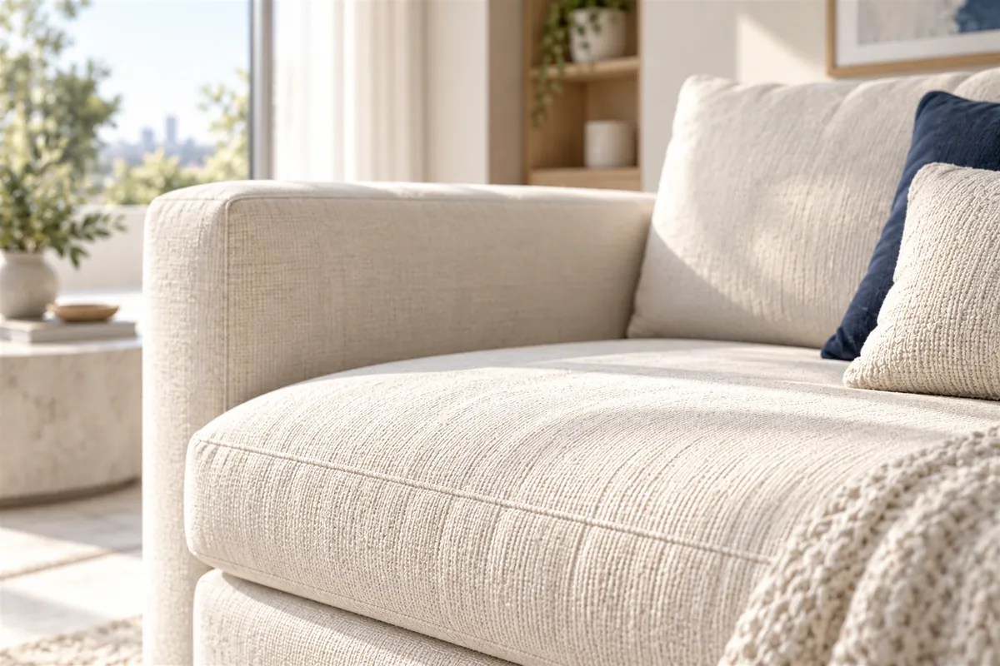
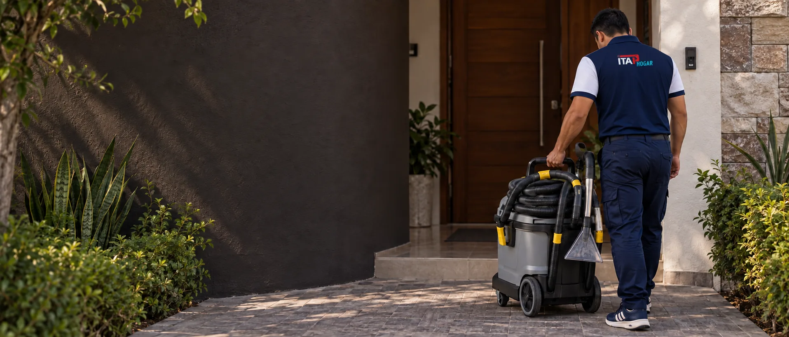
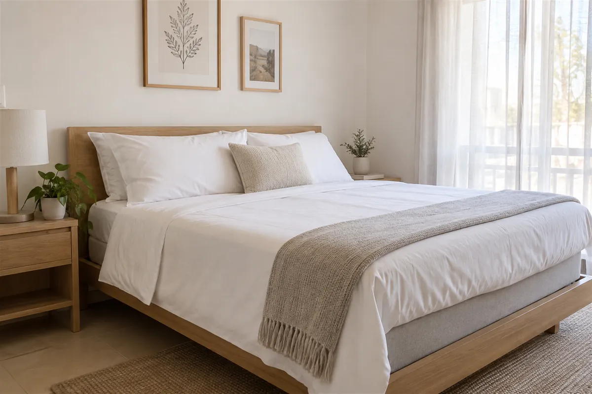
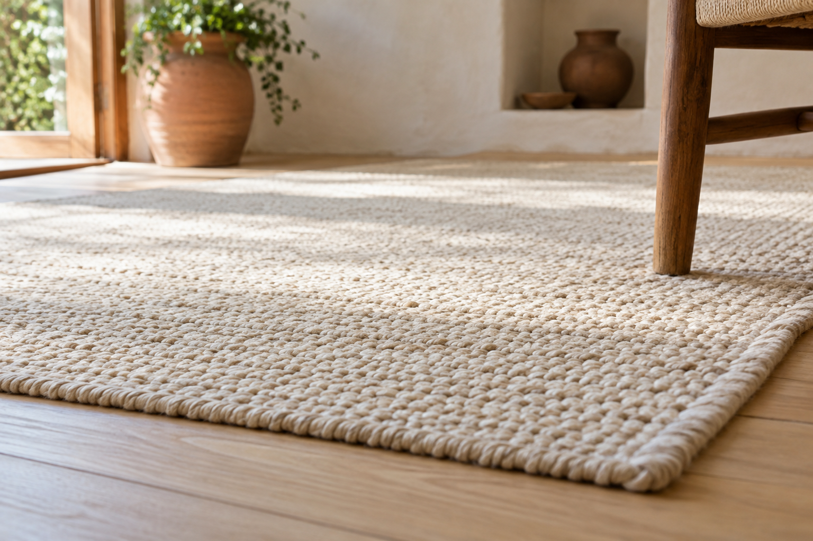
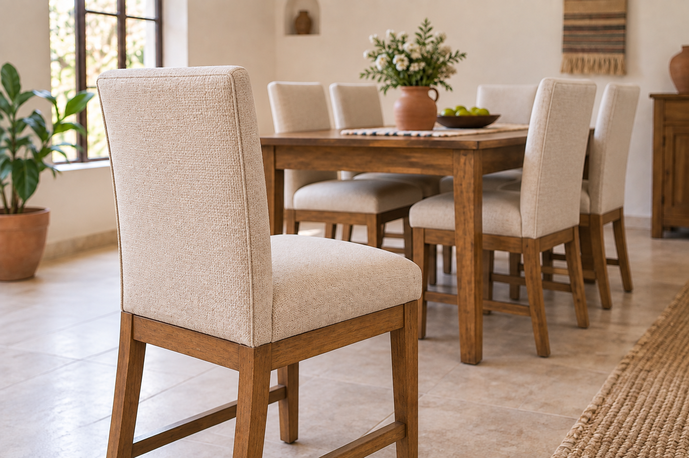
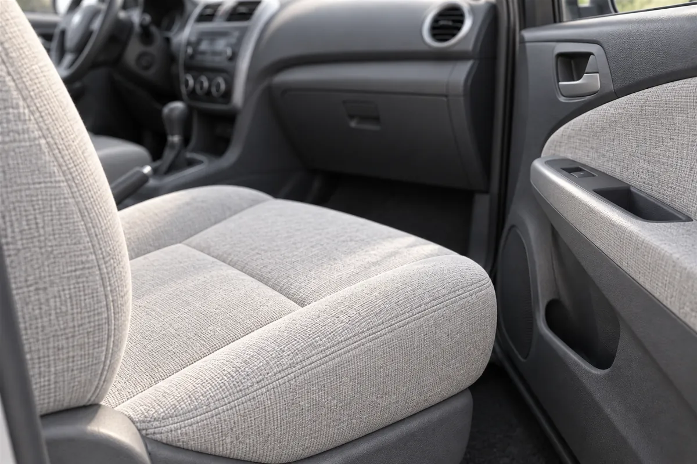
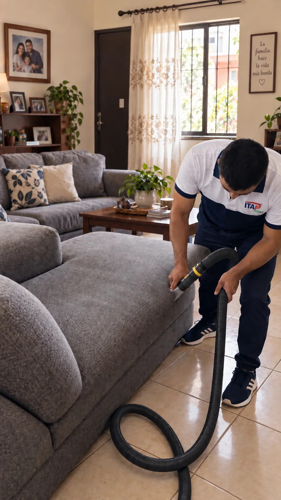
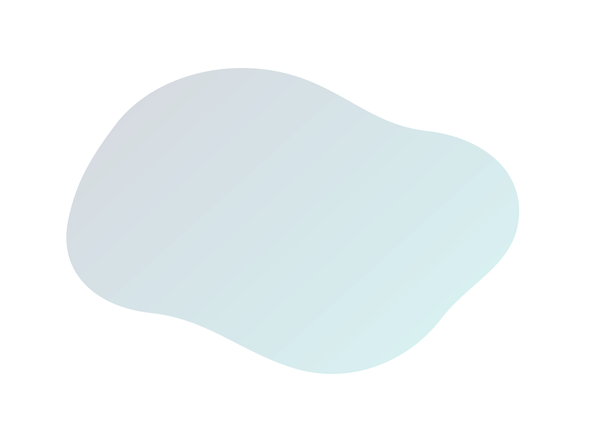

Tapicería y salas
Sillones, sofás y salas completas: asientos, respaldos, brazos y cojines fijos. Los cojines sueltos se limpian como adicional.
Cotizar tapicería
Limpiamos salas, colchones, alfombras, comedores e interiores de auto en Tenancingo, mediante un proceso profesional con diagnóstico, extracción profunda y evidencia fotográfica.
Te confirmamos el precio antes de empezar. Sin sorpresas al Final.
Cada textil se trata según su material y su condición. Aquí tienes qué incluye cada servicio y cuánto tarda en secar.

Sillones, sofás y salas completas: asientos, respaldos, brazos y cojines fijos. Los cojines sueltos se limpian como adicional.
Cotizar tapicería
Individual, matrimonial, queen y king. Se limpian las dos caras y los laterales. Ideal si hay ácaros, sudor o manchas orgánicas.
Cotizar colchón
Alfombra fija y tapetes por metro cuadrado. Las fibras naturales, lana o pelo largo llevan enjuague neutralizante y prueba discreta obligatoria.
Cotizar alfombra
Juegos de 6 sillas con asiento tapizado o tapizado completo, y sillas adicionales. El precio depende del tipo, tamaño y estado del textil.
Cotizar comedor
Sedán, SUV y van: asientos, alfombra, tapetes, cajuela, aspirado y pretratamiento de superficies duras. Entrega estimada el mismo día en condiciones estándar; los casos intensivos pueden entregarse al día siguiente. No incluye cielo ni desmontaje.
Cotizar interior de autoManchas de aceite, tinta o adhesivo, olores profundos, manchas orgánicas y piel o vinipiel se cotizan como tratamientos adicionales sobre el servicio base.
Dos sofás iguales pueden necesitar trabajos muy distintos. Por eso revisamos material, tamaño, condición y acceso antes de darte un precio claro y cerrado.
El precio se confirma contigo antes de iniciar. Si en sitio encontramos algo distinto a lo que enviaste, te lo explicamos y decides.
Un mismo proceso para cada servicio, sin importar el textil. Lo que cambia es el producto y el tiempo, no el orden.
Inspeccionamos el textil, identificamos el material y hacemos una prueba discreta en una zona oculta. Foto de inicio.
Aspirado profundo en seco y, si el textil lo permite, vapor para aflojar la suciedad antes de cualquier producto.
Aplicamos el tratamiento según lo encontrado, dejamos actuar, agitamos suave y extraemos con agua limpia.
Enjuague neutralizante donde corresponde, secado asistido, foto de cierre y recomendaciones para los siguientes días.
Si dos manchas se sobreponen, tratamos, extraemos y volvemos a evaluar antes del siguiente producto. Nunca mezclamos tratamientos en el mismo tanque.


Somos una empresa familiar de Tenancingo. Antes de vender limpieza, vendemos confianza: te decimos qué haremos, con qué, y te mostramos el resultado.
Zona base: Tenancingo de Degollado y alrededores, hasta 10 km. Fuera de la zona base atendemos con pedido mínimo y cargo por distancia, que te indicamos en la cotización.
Lo que más nos preguntan antes de agendar. Si tu duda no está aquí, escríbenos.
Porque el trabajo cambia según el textil, la suciedad y el acceso. Un precio fijo obligaría a cobrar de más a unos y a recortar el trabajo en otros. Con una foto y tu ubicación te damos un precio claro, y lo confirmamos antes de empezar.
Una foto general del mueble, colchón, alfombra o interior, con luz natural, y una de cerca si hay una mancha específica. Si son varias piezas, una foto por pieza es suficiente.
La mayoría de manchas de uso, mascotas y orgánicas se eliminan o mejoran notablemente. Tinta, betún, adhesivo y manchas fijadas por calor pueden reducirse pero no siempre desaparecen; te lo decimos en la inspección, antes de cobrar el tratamiento.
Tapicería de 3 a 4 horas; colchones de 4 a 6 horas con ventilador; alfombras de 4 a 5 horas. Confirmamos que el textil esté seco al centro, no solo en la superficie, y te dejamos recomendaciones de ventilación.
Usamos productos profesionales Kärcher aplicados en la dosis de etiqueta y extraídos con agua limpia, de modo que no queda producto en el textil. Recomendamos esperar a que esté completamente seco antes de volver a usarlo.
Sí. Si en una misma visita limpias dos o más categorías principales, o combinas servicios de hogar con el interior de tu auto, aplicamos un descuento. Son una por visita y no acumulables; te decimos cuál te conviene en la cotización.

Envíanos una foto, tu ubicación y el servicio que necesitas. Revisamos y te respondemos con una cotización clara.
Cotiza por WhatsApp